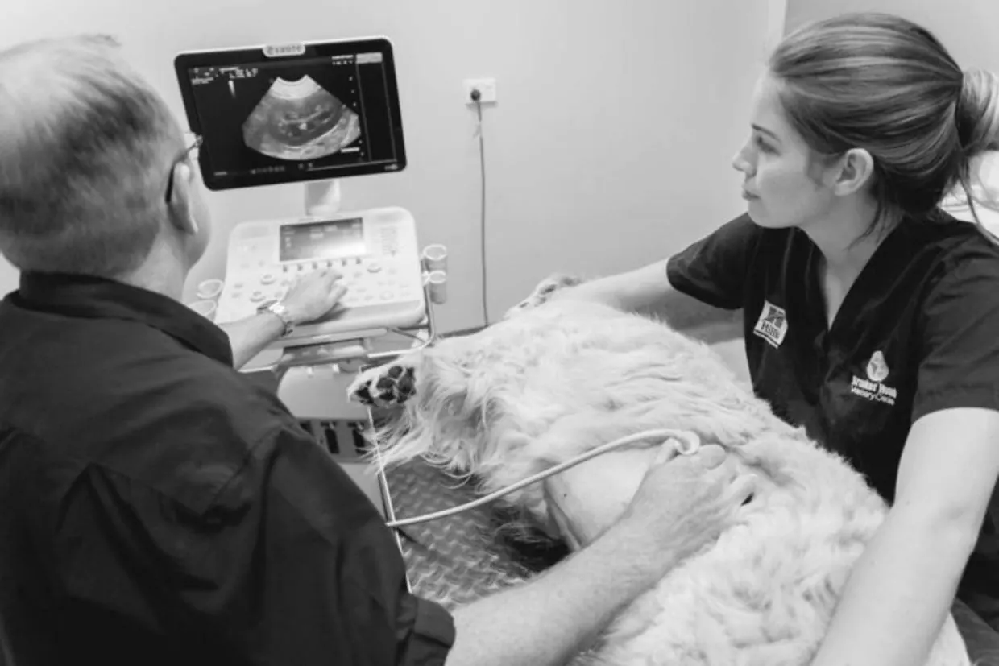

Ultrasound
Ultrasound imaging, also called ultrasound scanning or sonography, involves exposing part of the body to high-frequency sound waves to produce pictures of the inside of the body. Ultrasound exams do not use ionizing radiation (x-ray). Because ultrasound images are captured in real-time, they can show the structure and movement of the body's internal organs, as well as blood flowing through blood vessels. Ultrasound imaging can be performed using minimal restraint or sedation.
Veterinarians often use ultrasound to guide a small needle to diseased areas of tissue for biopsy. Abdominal ultrasound imaging is performed to evaluate the:
- kidneys
- liver
- gallbladder
- pancreas
- spleen
- blood vessels of the abdomen
Ultrasound is used to help diagnose a variety of conditions, such as:
- abdominal pain
- pancreatitis
- enlarged abdominal organ
- stones in the kidney or bladder
- portosystemic shunts
- needle biopsies in which needles are used to extract a sample of cells from organs for laboratory testing.
Is ultrasound worth it?
In recent years, ultrasound has become mainstream in the veterinary industry. But why? What are the top reasons people are investing in veterinary ultrasound?
- Advancements in the technology
- Affordable pricing to veterinarians as well as to pet-owners
- Reduced Diagnostic Costs
- Discovery of new diagnostic applications and specialty niches
- Increase referral network
How far has veterinary ultrasound technology progressed?
Today’s veterinary ultrasound systems are easier to use with higher resolution and improved image contrast, to the point that we can now reliably see smaller organs and decipher more subtle lesions, leading to quicker and easier diagnoses unimaginable only 5 years ago! There are even automatic image optimization features that allow DVMs and veterinary technicians relief from tedious machine controls while focusing on faster, more accurate diagnoses.
What is the average cost of veterinary ultrasound system for a small animal practice?
The average price tag of a veterinary ultrasound system with a basic set of probes ranges from $18,000 to $30,000, and depends on features such as portable vs. console systems, the number and variety of probes, and the inclusion of various software features that may include and real-time, on-board coaching modules.
So admittedly, veterinary ultrasound is an expensive modality. As such, many veterinarians are hesitant to foot the upfront cost, but recent data from the University of Illinois and the American Animal Hospital Association show that ultrasound offers an immediate revenue stream for most veterinarians.
The billing rate for veterinary ultrasound depends on the specific procedure performed; however, even at conservative estimates, this modality is an immediate source of income for most veterinary practices.
The AAHA analyzed data from 2015 and calculated that the average billing rates for abdominal exams are as follows:
- $275 in urban areas
- $231 in towns
- $121 in rural areas
A more recent study by the University of Illinois at Urbana-Champaign, College of Veterinary Medicine, estimated that the average cost of abdominal exams in 2016-2017 is $260. This does not include revenue from other ultrasound procedures such as pregnancy exams, echocardiography, and cystocentesis.
It means that taking into consideration the cost of equipment typically one would need
5-6 monthly procedures to break even.
Next steps
Once you gain the advanced technology, what is the best way to grow your business?
Attract More Clients through Word-of-Mouth Referrals
Pet owners feel confident when their veterinarians use the most advanced modalities. Because ultrasound has so many applications, you will have plenty of opportunities to explain the science behind ultrasonography and its various clinical benefits. This will encourage your clients to recommend your practice to their friends, family, and colleagues.
Offer Ultrasound to Specialized Niches
Ultrasound is an essential component in zoo and marine animal care, equine care, and ruminant care. By investing in a portable ultrasound system, you can offer your services to these specialized niches.
Conclusion
Veterinary ultrasound offers an immediate revenue boost for most DVMs. Even at conservative estimates, ultrasound equipment is a smart investment. Veterinarians who offer ultrasound not only open up new revenue streams, but they also encourage client loyalty and word-of-mouth referrals.